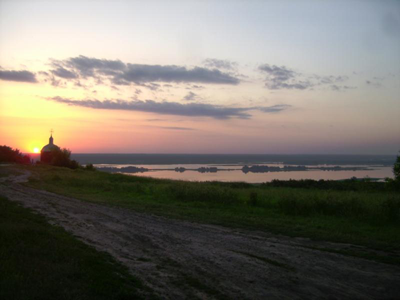

Комплекс мотель "Ямал" расположен в живописнейшем уголке Полесья, на берегу одной из чистейших рек Украины р. Снов - притоки р. Десна. Дубовая роща, сосновый лес, заливные пьянящие луга, чистая прозрачная вода, - эти места вдохновляли современных поэтов и художников, а также Тараса Шевченко, который неоднократно посещал эти места:
|
Летим. Дивлюся, аж світає, |
 |
весна 1847 года, вовремя пребывания на р. Снов.
Мотельные номера имеют современный дизайн и удовлетворят самый изысканный вкус клиентов. Спутниковое TV, плазменные панели, интернет Wifi, система кондиционирования воздуха - позволяют создать теплоту и домашний уют, хорошее настроение и душевное спокойствие. Удобное транспортное сообщение, охраняемая автостоянка - позволяют украсить отдых гостей комплекса. Каминный зал позволяет проводить празднование юбилеев, коорпоративов, конференций, выездных семинаров и тренингов, а также других мероприятий у живого огня камина.
Романтические встречи при свечах молодоженов и гостей оставит неизгладимое впечатления, радость, удовольствие и желание вернуться вновь. Посетивши нас Вы сделаете верный выбор, мы по настоящему позаботимся о Вас. Наш комплекс на период пребывания станет Вам родным домом. Тот, кто ценит комфорт и уют, современный дизайн, выбирают комплекс мотель "Ямал". Гостеприимство и доброжелательность обслуживающего персонала удовлетворит Ваш вкус, материальные возможности, а также превзойдут ваши ожидания, комплекс "Ямал" ждет Вас!